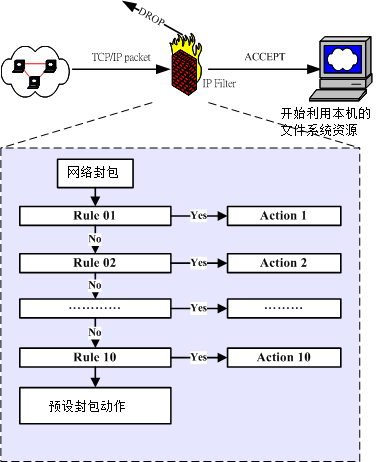
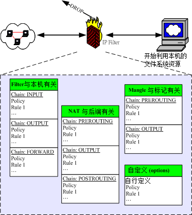
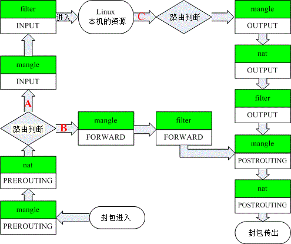

上面谈了这么多，主要还是希望你能了解到防火墙是什么这个议题！而且也希望你知道防火墙并非万能的。
好了，那么底下我们终于可以来瞧一瞧，那目前我们的 2.6 版这个 Linux 核心到底使用什么核心功能来进行防火墙设定？
 9.3.1 不同 Linux
核心版本的防火墙软件
9.3.1 不同 Linux
核心版本的防火墙软件
Linux 的防火墙为什么功能这么好？这是因为他本身就是由 Linux 核心所提供，由于直接经过核心来处理，因此效能非常好！
不过，不同核心版本所使用的防火墙软件是不一样的！因为核心支持的防火墙是逐渐演进而来的嘛！
- Version 2.0：使用 ipfwadm 这个防火墙机制；
- Version 2.2：使用的是 ipchains 这个防火墙机制；
- Version 2.4 与 2.6 ：主要是使用 iptables 这个防火墙机制，不过在某些早期的 Version 2.4
版本的 distributions 当中，亦同时支持 ipchains (编译成为模块)，好让用户仍然可以使用来自
2.2 版的 ipchains 的防火墙规划。不过，不建议在 2.4 以上的核心版本使用 ipchains 喔！
因为不同的核心使用的防火墙机制不同，且支持的软件指令与语法也不相同，所以在 Linux
上头设定属于你自己的防火墙规则时，要注意啊，先用 uname -r
追踪一下你的核心版本再说！如果你是安装 2004 年以后推出的 distributions ，那就不需要担心了，因为这些 distributions
几乎都使用 kernel 2.6 版的核心啊！ ^_^
9.3.2
封包进入流程：规则顺序的重要性！
前面的几个小节里面我们一直谈到：『防火墙规则』，咦！啥是规则啊？因为 iptables 是利用封包过滤的机制，
所以他会分析封包的表头数据。根据表头数据与定义的『规则』来决定该封包是否可以进入主机或者是被丢弃。
意思就是说：『根据封包的分析资料 "比对" 你预先定义的规则内容，
若封包数据与规则内容相同则进行动作，否则就继续下一条规则的比对！』
重点在那个『比对与分析顺序』上。
举个简单的例子，假设我预先定义 10 条防火墙规则好了，那么当 Internet 来了一个封包想要进入我的主机，
那么防火墙是如何分析这个封包的呢？我们以底下的图示来说明好了：

图 9.3-1、封包过滤的规则动作及分析流程
当一个网络封包要进入到主机之前，会先经由 NetFilter 进行检查，那就是 iptables 的规则了。
检查通过则接受 (ACCEPT) 进入本机取得资源，如果检查不通过，则可能予以丢弃 (DROP) ！
上图中主要的目的在告知你：『规则是有顺序的』！例如当网络封包进入 Rule 1 的比对时，
如果比对结果符合 Rule 1 ，此时这个网络封包就会进行 Action 1
的动作，而不会理会后续的 Rule 2, Rule 3.... 等规则的分析了。
而如果这个封包并不符合 Rule 1 的比对，那就会进入 Rule 2 的比对了！如此一个一个规则去进行比对就是了。
那如果所有的规则都不符合怎办？此时就会透过预设动作 (封包政策, Policy) 来决定这个封包的去向。
所以啦，当你的规则顺序排列错误时，就会产生很严重的错误了。
怎么说呢？让我们看看底下这个例子：
假设你的 Linux 主机提供了 WWW 的服务，那么自然就要针对 port 80 来启用通过的封包规则，但是你发现
IP 来源为 192.168.100.100 老是恶意的尝试入侵你的系统，所以你想要将该 IP 拒绝往来，最后，所有的非
WWW 的封包都给他丢弃，就这三个规则来说，你要如何设定防火墙检验顺序呢？
- Rule 1 先抵挡 192.168.100.100 ；
- Rule 2 再让要求 WWW 服务的封包通过；
- Rule 3 将所有的封包丢弃。
这样的排列顺序就能符合你的需求，不过，万一你的顺序排错了，变成：
- Rule 1 先让要求 WWW 服务的封包通过；
- Rule 2 再抵挡 192.168.100.100 ；
- Rule 3 将所有的封包丢弃。
此时，那个 192.168.100.100 『可以使用你的 WWW 服务』喔！只要他对你的主机送出 WWW 要求封包，就可以使用你的 WWW
功能了，因为你的规则顺序定义第一条就会让他通过，而不去考虑第二条规则！这样可以理解规则顺序的意义了吗！
现在再来想一想，如果 Rule 1 变成了『将所有的封包丢弃』，Rule 2 才设定『WWW 服务封包通过』，请问，我的 client
可以使用我的 WWW 服务吗？呵呵！答案是『否～』想通了吗？ ^_^
9.3.3 iptables 的表格 (table)
与链 (chain)
事实上，那个图 9.3-1 所列出的规则仅是 iptables 众多表格当中的一个链 (chain) 而已。
什么是链呢？这得由 iptables 的名称说起。为什么称为 ip"tables" 呢？
因为这个防火墙软件里面有多个表格 (table) ，每个表格都定义出自己的默认政策与规则，
且每个表格的用途都不相同。我们可以使用底下这张图来稍微了解一下：

图 9.3-2、iptables 的表格与相关链示意图
刚刚图 9.3-1 的规则内容仅只是图 9.3-2 内的某个 chain 而已！
而预设的情况下，咱们 Linux 的 iptables 至少就有三个表格，包括管理本机进出的 filter 、管理后端主机
(防火墙内部的其他计算机) 的 nat 、管理特殊旗标使用的 mangle (较少使用) 。更有甚者，我们还可以自定义额外的链呢！
真是很神奇吧！每个表格与其中链的用途分别是这样的：
- filter (过滤器)：主要跟进入 Linux 本机的封包有关，这个是预设的 table 喔！
- INPUT：主要与想要进入我们 Linux 本机的封包有关；
- OUTPUT：主要与我们 Linux 本机所要送出的封包有关；
- FORWARD：这个咚咚与 Linux 本机比较没有关系，
他可以『转递封包』到后端的计算机中，与下列 nat table 相关性较高。
- nat (地址转换)：是 Network Address Translation 的缩写，
这个表格主要在进行来源与目的之 IP 或 port 的转换，与 Linux 本机较无关，主要与 Linux
主机后的局域网络内计算机较有相关。
- PREROUTING：在进行路由判断之前所要进行的规则(DNAT/REDIRECT)
- POSTROUTING：在进行路由判断之后所要进行的规则(SNAT/MASQUERADE)
- OUTPUT：与发送出去的封包有关
- mangle (破坏者)：这个表格主要是与特殊的封包的路由旗标有关，
早期仅有 PREROUTING 及 OUTPUT 链，不过从 kernel 2.4.18 之后加入了 INPUT 及 FORWARD 链。
由于这个表格与特殊旗标相关性较高，所以像咱们这种单纯的环境当中，较少使用 mangle 这个表格。
所以说，如果你的 Linux 是作为 www 服务，那么要开放客户端对你的 www 要求有响应，就得要处理 filter 的 INPUT 链；
而如果你的 Linux 是作为局域网络的路由器，那么就得要分析 nat 的各个链以及 filter 的 FORWARD 链才行。也就是说，
其实各个表格的链结之间是有关系的！简单的关系可以由下图这么看：

图 9.3-3、iptables 内建各表格与链的相关性
上面的图示很复杂喔！不过基本上你依旧可以看出来，我们的 iptables 可以控制三种封包的流向：
- 封包进入 Linux 主机使用资源 (路径 A)：
在路由判断后确定是向 Linux 主机要求数据的封包，主要就会透过 filter 的 INPUT 链来进行控管；
- 封包经由 Linux 主机的转递，没有使用主机资源，而是向后端主机流动 (路径 B)：
在路由判断之前进行封包表头的修订作业后，发现到封包主要是要透过防火墙而去后端，此时封包就会透过路径 B 来跑动。
也就是说，该封包的目标并非我们的 Linux 本机。主要经过的链是 filter 的 FORWARD 以及 nat 的 POSTROUTING, PREROUTING。
这路径 B 的封包流向使用情况，我们会在本章的 9.5 小节来跟大家作个简单的介绍。
- 封包由 Linux 本机发送出去 (路径 C)：
例如响应客户端的要求，或者是 Linux 本机主动送出的封包，都是透过路径 C 来跑的。先是透过路由判断，
决定了输出的路径后，再透过 filter 的 OUTPUT 链来传送的！当然，最终还是会经过 nat 的 POSTROUTING 链。
Tips:
有没有发现有两个『路由判断』呢？因为网络是双向的，所以进与出要分开来看！因此，进入的封包需要路由判断，
送出的封包当然也要进行路由判断才能够发送出去啊！了解乎？
|  |
由于 mangle 这个表格很少被使用，如果将图 9.3-3 的 mangle 拿掉的话，那就容易看的多了：
")
图 9.3-4、iptables 内建各表格与链的相关性(简图)
透过图 9.3-4 你就可以更轻松的了解到，事实上与本机最有关的其实是 filter 这个表格内的 INPUT 与 OUTPUT
这两条链，如果你的 iptables 只是用来保护 Linux 主机本身的话，那 nat
的规则根本就不需要理他，直接设定为开放即可。
不过，如果你的防火墙事实上是用来管制 LAN 内的其他主机的话，那么你就必须要再针对
filter 的 FORWARD 这条链，还有 nat 的 PREROUTING, POSTROUTING 以及 OUTPUT 进行额外的规则订定才行。
nat 表格的使用需要很清晰的路由概念才能够设定的好，建议新手先不要碰！最多就是先玩一玩最阳春的 nat
功能『IP 分享器的功能』就好了！ ^_^！这部份我们在本章的最后一小节会介绍的啦！
9.3.4 本机的 iptables 语法
理论上，当你安装好 Linux 之后，系统应该会主动的帮你启动一个阳春的防火墙规则才是，
不过这个阳春防火墙可能不是我们想要的模式，因此我们需要额外进行一些修订的行为。不过，在开始进行底下的练习之前，
鸟哥这里有个很重要的事情要告知一下。因为 iptables 的指令会将网络封包进行过滤及抵挡的动作，所以，
请不要在远程主机上进行防火墙的练习，因为你很有可能一不小心将自己关在家门外！
尽量在本机前面登入 tty1-tty6 终端机进行练习，否则常常会发生悲剧啊！鸟哥以前刚刚在玩 iptables
时，就常常因为不小心规则设定错误，导致常常要请远程的朋友帮忙重新启动...
刚刚提到咱们的 iptables 至少有三个预设的 table (filter, nat, mangle)，较常用的是本机的 filter 表格，
这也是默认表格啦。另一个则是后端主机的 nat 表格，至于 mangle 较少使用，所以这个章节我们并不会讨论 mangle。
由于不同的 table 他们的链不一样，导致使用的指令语法或多或少都有点差异。
在这个小节当中，我们主要将针对 filter 这个默认表格的三条链来做介绍。底下就来玩一玩吧！
Tips:
防火墙的设定主要使用的就是 iptables 这个指令而已。而防火墙是系统管理员的主要任务之一，
且对于系统的影响相当的大，因此『只能让 root 使用 iptables 』，不论是设定还是观察防火墙规则喔！
| |
9.3.4-1
规则的观察与清除
如果你在安装的时候选择没有防火墙的话，那么 iptables 在一开始的时候应该是没有规则的，不过，
可能因为你在安装的时候就有选择系统自动帮你建立防火墙机制，那系统就会有默认的防火墙规则了！
无论如何，我们先来看看目前本机的防火墙规则是如何吧！
[root@www ~]# iptables [-t tables] [-L] [-nv]
选项与参数：
-t ：后面接 table ，例如 nat 或 filter ，若省略此项目，则使用默认的 filter
-L ：列出目前的 table 的规则
-n ：不进行 IP 与 HOSTNAME 的反查，显示讯息的速度会快很多！
-v ：列出更多的信息，包括通过该规则的封包总位数、相关的网络接口等
范例：列出 filter table 三条链的规则
[root@www ~]# iptables -L -n
Chain INPUT (policy ACCEPT) <==针对 INPUT 链，且预设政策为可接受
target prot opt source destination <==说明栏
ACCEPT all -- 0.0.0.0/0 0.0.0.0/0 state RELATED,ESTABLISHED <==第 1 条规则
ACCEPT icmp -- 0.0.0.0/0 0.0.0.0/0 <==第 2 条规则
ACCEPT all -- 0.0.0.0/0 0.0.0.0/0 <==第 3 条规则
ACCEPT tcp -- 0.0.0.0/0 0.0.0.0/0 state NEW tcp dpt:22 <==以下类推
REJECT all -- 0.0.0.0/0 0.0.0.0/0 reject-with icmp-host-prohibited
Chain FORWARD (policy ACCEPT) <==针对 FORWARD 链，且预设政策为可接受
target prot opt source destination
REJECT all -- 0.0.0.0/0 0.0.0.0/0 reject-with icmp-host-prohibited
Chain OUTPUT (policy ACCEPT) <==针对 OUTPUT 链，且预设政策为可接受
target prot opt source destination
范例：列出 nat table 三条链的规则
[root@www ~]# iptables -t nat -L -n
Chain PREROUTING (policy ACCEPT)
target prot opt source destination
Chain POSTROUTING (policy ACCEPT)
target prot opt source destination
Chain OUTPUT (policy ACCEPT)
target prot opt source destination
|
在上表中，每一个 Chain 就是前面提到的每个链啰～ Chain 那一行里面括号的 policy 就是预设的政策，
那底下的 target, prot 代表什么呢？
- target：代表进行的动作， ACCEPT 是放行，而 REJECT 则是拒绝，此外，尚有 DROP (丢弃) 的项目！
- prot：代表使用的封包协议，主要有 tcp, udp 及 icmp 三种封包格式；
- opt：额外的选项说明
- source ：代表此规则是针对哪个『来源 IP』进行限制？
- destination ：代表此规则是针对哪个『目标 IP』进行限制？
在输出结果中，第一个范例因为没有加上 -t 的选项，所以默认就是 filter 这个表格内的 INPUT,
OUTPUT, FORWARD 三条链的规则啰。若针对单机来说，INPUT 与 FORWARD 算是比较重要的管制防火墙链，
所以你可以发现最后一条规则的政策是 REJECT (拒绝) 喔！虽然 INPUT 与 FORWARD 的政策是放行 (ACCEPT)，
不过在最后一条规则就已经将全部的封包都拒绝了！
不过这个指令的观察只是作个格式化的查阅，要详细解释每个规则会比较不容易解析。举例来说，
我们将 INPUT 的 5 条规则依据输出结果来说明一下，结果会变成：
- 只要是封包状态为 RELATED,ESTABLISHED 就予以接受
- 只要封包协议是 icmp 类型的，就予以放行
- 无论任何来源 (0.0.0.0/0) 且要去任何目标的封包，不论任何封包格式 (prot 为 all)，通通都接受
- 只要是传给 port 22 的主动式联机 tcp 封包就接受
- 全部的封包信息通通拒绝
最有趣的应该是第 3 条规则了，怎么会所有的封包信息都予以接受？如果都接受的话，那么后续的规则根本就不会有用嘛！
其实那条规则是仅针对每部主机都有的内部循环测试网络 (lo) 接口啦！如果没有列出接口，那么我们就很容易搞错啰～
所以，近来鸟哥都建议使用 iptables-save 这个指令来观察防火墙规则啦！因为 iptables-save
会列出完整的防火墙规则，只是并没有规格化输出而已。
[root@www ~]# iptables-save [-t table]
选项与参数：
-t ：可以仅针对某些表格来输出，例如仅针对 nat 或 filter 等等
[root@www ~]# iptables-save
# Generated by iptables-save v1.4.7 on Fri Jul 22 15:51:52 2011
*filter <==星号开头的指的是表格，这里为 filter
:INPUT ACCEPT [0:0] <==冒号开头的指的是链，三条内建的链
:FORWARD ACCEPT [0:0] <==三条内建链的政策都是 ACCEPT 啰！
:OUTPUT ACCEPT [680:100461]
-A INPUT -m state --state RELATED,ESTABLISHED -j ACCEPT <==针对 INPUT 的规则
-A INPUT -p icmp -j ACCEPT
-A INPUT -i lo -j ACCEPT <==这条很重要！针对本机内部接口开放！
-A INPUT -p tcp -m state --state NEW -m tcp --dport 22 -j ACCEPT
-A INPUT -j REJECT --reject-with icmp-host-prohibited
-A FORWARD -j REJECT --reject-with icmp-host-prohibited <==针对 FORWARD 的规则
COMMIT
# Completed on Fri Jul 22 15:51:52 2011
|
由上面的输出来看，有底线且内容含有 lo 的那条规则当中，『 -i lo 』指的就是由 lo 适配卡进来的封包！
这样看就清楚多了！因为有写到接口的关系啊！不像之前的 iptables -L -n 嘛！这样了解乎！
不过，既然这个规则不是我们想要的，那该如何修改规则呢？鸟哥建议，先删除规则再慢慢建立各个需要的规则！
那如何清除规则？这样做就对了：
[root@www ~]# iptables [-t tables] [-FXZ]
选项与参数：
-F ：清除所有的已订定的规则；
-X ：杀掉所有使用者 "自定义" 的 chain (应该说的是 tables ）啰；
-Z ：将所有的 chain 的计数与流量统计都归零
范例：清除本机防火墙 (filter) 的所有规则
[root@www ~]# iptables -F
[root@www ~]# iptables -X
[root@www ~]# iptables -Z
|
由于这三个指令会将本机防火墙的所有规则都清除，但却不会改变预设政策 (policy) ，
所以如果你不是在本机下达这三行指令时，很可能你会被自己挡在家门外 (若 INPUT 设定为 DROP 时)！要小心啊！
一般来说，我们在重新定义防火墙的时候，都会先将规则给他清除掉。还记得我们前面谈到的，
防火墙的『规则顺序』是有特殊意义的，所以啰，
当然先清除掉规则，然后一条一条来设定会比较容易一点啦。底下就来谈谈定义预设政策吧！
9.3.4-2
定义预设政策 (policy)
清除规则之后，再接下来就是要设定规则的政策啦！还记得政策指的是什么吗？『
当你的封包不在你设定的规则之内时，则该封包的通过与否，是以 Policy
的设定为准』，在本机方面的预设政策中，假设你对于内部的使用者有信心的话，
那么 filter 内的 INPUT 链方面可以定义的比较严格一点，而 FORWARD 与 OUTPUT
则可以订定的松一些！通常鸟哥都是将 INPUT 的 policy 定义为 DROP 啦，其他两个则定义为 ACCEPT。
至于 nat table 则暂时先不理会他。
[root@www ~]# iptables [-t nat] -P [INPUT,OUTPUT,FORWARD] [ACCEPT,DROP]
选项与参数：
-P ：定义政策( Policy )。注意，这个 P 为大写啊！
ACCEPT ：该封包可接受
DROP ：该封包直接丢弃，不会让 client 端知道为何被丢弃。
范例：将本机的 INPUT 设定为 DROP ，其他设定为 ACCEPT
[root@www ~]# iptables -P INPUT DROP
[root@www ~]# iptables -P OUTPUT ACCEPT
[root@www ~]# iptables -P FORWARD ACCEPT
[root@www ~]# iptables-save
# Generated by iptables-save v1.4.7 on Fri Jul 22 15:56:34 2011
*filter
:INPUT DROP [0:0]
:FORWARD ACCEPT [0:0]
:OUTPUT ACCEPT [0:0]
COMMIT
# Completed on Fri Jul 22 15:56:34 2011
# 由于 INPUT 设定为 DROP 而又尚未有任何规则，所以上面的输出结果显示：
# 所有的封包都无法进入你的主机！是不通的防火墙设定！(网络联机是双向的)
|
看到输出的结果了吧？INPUT 被修改了设定喔！其他的 nat table 三条链的预设政策设定也是一样的方式，例如：『
iptables -t nat -P PREROUTING ACCEPT 』就设定了 nat table
的 PREROUTING 链为可接受的意思！预设政策设定完毕后，来谈一谈关于各规则的封包基础比对设定吧。
9.3.4-3
封包的基础比对：IP, 网域及接口装置
开始来进行防火墙规则的封包比对设定吧！既然是因特网，那么我们就由最基础的 IP, 网域及埠口，亦即是 OSI
的第三层谈起，再来谈谈装置 (网络卡) 的限制等等。这一小节与下一小节的语法你一定要记住，因为这是最基础的比对语法喔！
[root@www ~]# iptables [-AI 链名] [-io 网络接口] [-p 协议] \
> [-s 来源IP/网域] [-d 目标IP/网域] -j [ACCEPT|DROP|REJECT|LOG]
选项与参数：
-AI 链名：针对某的链进行规则的 "插入" 或 "累加"
-A ：新增加一条规则，该规则增加在原本规则的最后面。例如原本已经有四条规则，
使用 -A 就可以加上第五条规则！
-I ：插入一条规则。如果没有指定此规则的顺序，默认是插入变成第一条规则。
例如原本有四条规则，使用 -I 则该规则变成第一条，而原本四条变成 2~5 号
链 ：有 INPUT, OUTPUT, FORWARD 等，此链名称又与 -io 有关，请看底下。
-io 网络接口：设定封包进出的接口规范
-i ：封包所进入的那个网络接口，例如 eth0, lo 等接口。需与 INPUT 链配合；
-o ：封包所传出的那个网络接口，需与 OUTPUT 链配合；
-p 协定：设定此规则适用于哪种封包格式
主要的封包格式有： tcp, udp, icmp 及 all 。
-s 来源 IP/网域：设定此规则之封包的来源项目，可指定单纯的 IP 或包括网域，例如：
IP ：192.168.0.100
网域：192.168.0.0/24, 192.168.0.0/255.255.255.0 均可。
若规范为『不许』时，则加上 ! 即可，例如：
-s ! 192.168.100.0/24 表示不许 192.168.100.0/24 之封包来源；
-d 目标 IP/网域：同 -s ，只不过这里指的是目标的 IP 或网域。
-j ：后面接动作，主要的动作有接受(ACCEPT)、丢弃(DROP)、拒绝(REJECT)及记录(LOG)
|
iptables 的基本参数就如同上面所示的，仅只谈到 IP 、网域与装置等等的信息，
至于 TCP, UDP 封包特有的埠口 (port number) 与状态 (如 SYN 旗标) 则在下小节才会谈到。
好，先让我们来看看最基础的几个规则，例如开放 lo 这个本机的接口以及某个 IP 来源吧！
范例：设定 lo 成为受信任的装置，亦即进出 lo 的封包都予以接受
[root@www ~]# iptables -A INPUT -i lo -j ACCEPT
|
仔细看上面并没有列出 -s, -d 等等的规则，这表示：不论封包来自何处或去到哪里，只要是来自
lo 这个界面，就予以接受！这个观念挺重要的，就是『没有指定的项目，则表示该项目完全接受』的意思！
例如这个案例当中，关于 -s, -d...等等的参数没有规定时，就代表不论什么值都会被接受啰。
这就是所谓的信任装置啦！假如你的主机有两张以太网络卡，其中一张是对内部的网域，假设该网卡的代号为 eth1 好了，
如果内部网域是可信任的，那么该网卡的进出封包就通通会被接受，那你就能够用：『iptables -A INPUT -i eth1 -j ACCEPT』
来将该装置设定为信任装置。不过，下达这个指令前要特别注意，因为这样等于该网卡没有任何防备了喔！
范例：只要是来自内网的 (192.168.100.0/24) 的封包通通接受
[root@www ~]# iptables -A INPUT -i eth1 -s 192.168.100.0/24 -j ACCEPT
# 由于是内网就接受，因此也可以称之为『信任网域』啰。
范例：只要是来自 192.168.100.10 就接受，但 192.168.100.230 这个恶意来源就丢弃
[root@www ~]# iptables -A INPUT -i eth1 -s 192.168.100.10 -j ACCEPT
[root@www ~]# iptables -A INPUT -i eth1 -s 192.168.100.230 -j DROP
# 针对单一 IP 来源，可视为信任主机或者是不信任的恶意来源喔！
[root@www ~]# iptables-save
# Generated by iptables-save v1.4.7 on Fri Jul 22 16:00:43 2011
*filter
:INPUT DROP [0:0]
:FORWARD ACCEPT [0:0]
:OUTPUT ACCEPT [17:1724]
-A INPUT -i lo -j ACCEPT
-A INPUT -s 192.168.100.0/24 -i eth1 -j ACCEPT
-A INPUT -s 192.168.100.10/32 -i eth1 -j ACCEPT
-A INPUT -s 192.168.100.230/32 -i eth1 -j DROP
COMMIT
# Completed on Fri Jul 22 16:00:43 2011
|
这就是最单纯简单的防火墙规则的设定与观察方式。不过，在上面的案例中，其实你也发现到有两条规则可能有问题～
那就是上面的特殊字体圈起来的规则顺序。明明已经放行了 192.168.100.0/24 了，所以那个 192.168.100.230
的规则就不可能会被用到！这就是有问题的防火墙设定啊！了解乎？那该怎办？就重打啊！@_@！
那如果你想要记录某个规则的纪录怎么办？可以这样做：
[root@www ~]# iptables -A INPUT -s 192.168.2.200 -j LOG
[root@www ~]# iptables -L -n
target prot opt source destination
LOG all -- 192.168.2.200 0.0.0.0/0 LOG flags 0 level 4
|
看到输出结果的最左边，会出现的是 LOG 喔！只要有封包来自 192.168.2.200 这个 IP 时，
那么该封包的相关信息就会被写入到核心讯息，亦即是 /var/log/messages 这个档案当中。
然后该封包会继续进行后续的规则比对。所以说，
LOG 这个动作仅在进行记录而已，并不会影响到这个封包的其他规则比对的。
好了，接下来我们分别来看看 TCP,UDP 以及 ICMP 封包的其他规则比对吧！
9.3.4-4
TCP, UDP 的规则比对：针对埠口设定
我们在第二章网络基础谈过各种不同的封包格式，
在谈到 TCP 与 UDP 时，比较特殊的就是那个埠口 (port)，在 TCP 方面则另外有所谓的联机封包状态，
包括最常见的 SYN 主动联机的封包格式。那么如何针对这两种封包格式进行防火墙规则的设定呢？你可以这样看：
[root@www ~]# iptables [-AI 链] [-io 网络接口] [-p tcp,udp] \
> [-s 来源IP/网域] [--sport 埠口范围] \
> [-d 目标IP/网域] [--dport 埠口范围] -j [ACCEPT|DROP|REJECT]
选项与参数：
--sport 埠口范围：限制来源的端口号码，端口号码可以是连续的，例如 1024:65535
--dport 埠口范围：限制目标的端口号码。
|
事实上就是多了那个 --sport 及 --dport 这两个玩意儿，重点在那个 port 上面啦！
不过你得要特别注意，因为仅有 tcp 与 udp 封包具有埠口，因此你想要使用
--dport, --sport 时，得要加上 -p tcp 或 -p udp 的参数才会成功喔！底下让我们来进行几个小测试：
范例：想要联机进入本机 port 21 的封包都抵挡掉：
[root@www ~]# iptables -A INPUT -i eth0 -p tcp --dport 21 -j DROP
范例：想连到我这部主机的网芳 (upd port 137,138 tcp port 139,445) 就放行
[root@www ~]# iptables -A INPUT -i eth0 -p udp --dport 137:138 -j ACCEPT
[root@www ~]# iptables -A INPUT -i eth0 -p tcp --dport 139 -j ACCEPT
[root@www ~]# iptables -A INPUT -i eth0 -p tcp --dport 445 -j ACCEPT
|
瞧！你可以利用 UDP 与 TCP 协议所拥有的端口号码来进行某些服务的开放或关闭喔！你还可以综合处理呢！例如：只要来自
192.168.1.0/24 的 1024:65535 埠口的封包，且想要联机到本机的 ssh port 就予以抵挡，可以这样做：
[root@www ~]# iptables -A INPUT -i eth0 -p tcp -s 192.168.1.0/24 \
> --sport 1024:65534 --dport ssh -j DROP
|
如果忘记加上 -p tcp 就使用了 --dport 时，会发生啥问题呢？
[root@www ~]# iptables -A INPUT -i eth0 --dport 21 -j DROP
iptables v1.4.7: unknown option `--dport'
Try `iptables -h' or 'iptables --help' for more information.
|
你应该会觉得很奇怪，怎么『 --dport 』会是未知的参数 (arg) 呢？这是因为你没有加上 -p tcp 或 -p udp
的缘故啊！很重要喔！
除了埠口之外，在 TCP 还有特殊的旗标啊！最常见的就是那个主动联机的 SYN 旗标了。
我们在 iptables 里面还支持『 --syn 』的处理方式，我们以底下的例子来说明好了：
范例：将来自任何地方来源 port 1:1023 的主动联机到本机端的 1:1023 联机丢弃
[root@www ~]# iptables -A INPUT -i eth0 -p tcp --sport 1:1023 \
> --dport 1:1023 --syn -j DROP
|
一般来说，client 端启用的 port 都是大于 1024 以上的埠口，而 server 端则是启用小于 1023
以下的埠口在监听的。所以我们可以让来自远程的小于 1023 以下的端口数据的主动联机都给他丢弃！
但不适用在 FTP 的主动联机中！这部份我们未来在二十一章的 FTP 服务器再来谈吧！
9.3.4-5
iptables 外挂模块：mac 与 state
在 kernel 2.2 以前使用 ipchains 管理防火墙时，通常会让系统管理员相当头痛！因为 ipchains
没有所谓的封包状态模块，因此我们必须要针对封包的进、出方向进行管控。举例来说，如果你想要联机到远程主机的
port 22 时，你必须要针对两条规则来设定：
- 本机端的 1024:65535 到远程的 port 22 必须要放行 (OUTPUT 链)；
- 远程主机 port 22 到本机的 1024:65535 必须放行 (INPUT 链)；
这会很麻烦！因为如果你要联机到 10 部主机的 port 22 时，假设 OUTPUT 为预设开启 (ACCEPT)，
你依旧需要填写十行规则，让那十部远程主机的 port 22 可以联机到你的本地端主机上。
那如果开启全部的 port 22 呢？又担心某些恶意主机会主动以 port 22 联机到你的机器上！
同样的道理，如果你要让本地端主机可以连到外部的 port 80 (WWW 服务)，那就更不得了～
这就是网络联机是双向的一个很重要的概念！
好在我们的 iptables 免除了这个困扰！他可以透过一个状态模块来分析
『这个想要进入的封包是否为刚刚我发出去的响应？』
如果是刚刚我发出去的响应，那么就可以予以接受放行！哇！真棒！这样就不用管远程主机是否联机进来的问题了！
那如何达到呢？看看底下的语法：
[root@www ~]# iptables -A INPUT [-m state] [--state 状态]
选项与参数：
-m ：一些 iptables 的外挂模块，主要常见的有：
state ：状态模块
mac ：网络卡硬件地址 (hardware address)
--state ：一些封包的状态，主要有：
INVALID ：无效的封包，例如数据破损的封包状态
ESTABLISHED：已经联机成功的联机状态；
NEW ：想要新建立联机的封包状态；
RELATED ：这个最常用！表示这个封包是与我们主机发送出去的封包有关
范例：只要已建立或相关封包就予以通过，只要是不合法封包就丢弃
[root@www ~]# iptables -A INPUT -m state \
> --state RELATED,ESTABLISHED -j ACCEPT
[root@www ~]# iptables -A INPUT -m state --state INVALID -j DROP
|
如此一来，我们的 iptables 就会主动分析出该封包是否为响应状态，若是的话，就直接予以接受。呵呵！
这样一来你就不需要针对响应的封包来撰写个别的防火墙规则了！这真是太棒了！底下我们继续谈一下 iptables 的另一个外挂，
那就是针对网卡来进行放行与防御：
范例：针对局域网络内的 aa:bb:cc:dd:ee:ff 主机开放其联机
[root@www ~]# iptables -A INPUT -m mac --mac-source aa:bb:cc:dd:ee:ff \
> -j ACCEPT
选项与参数：
--mac-source ：就是来源主机的 MAC 啦！
|
如果你的区网当中有某些网络高手，老是可以透过修改 IP 去尝试透过路由器往外跑，那你该怎么办？
难道将整个区网拒绝？并不需要的，你可以透过之前谈到的 ARP 相关概念，去捉到那部主机的 MAC ，然后透过上头的这个机制，
将该主机整个 DROP 掉即可。不管他改了什么 IP ，除非他知道你是用网卡的 MAC 来管理，否则他就是出不去啦！了解乎？
Tips:
其实 MAC 也是可以伪装的，可以透过某些软件来修改网卡的 MAC。不过，这里我们是假设 MAC 是无法修改的情况来说明的。
此外，MAC 是不能跨路由的，因此上述的案例中才特别说明是在区网内，而不是指 Internet 外部的来源唷！
| |
9.3.4-6
ICMP 封包规则的比对：针对是否响应 ping 来设计
在第二章 ICMP 协议当中我们知道
ICMP 的类型相当的多，而且很多 ICMP 封包的类型都是为了要用来进行网络检测用的！所以最好不要将所有的 ICMP
封包都丢弃！如果不是做为路由器的主机时，通常我们会把 ICMP type 8 (echo request)
拿掉而已，让远程主机不知道我们是否存在，也不会接受 ping 的响应就是了。ICMP 封包格式的处理是这样的：
[root@www ~]# iptables -A INPUT [-p icmp] [--icmp-type 类型] -j ACCEPT
选项与参数：
--icmp-type ：后面必须要接 ICMP 的封包类型，也可以使用代号，
例如 8 代表 echo request 的意思。
范例：让 0,3,4,11,12,14,16,18 的 ICMP type 可以进入本机：
[root@www ~]# vi somefile
#!/bin/bash
icmp_type="0 3 4 11 12 14 16 18"
for typeicmp in $icmp_type
do
iptables -A INPUT -i eth0 -p icmp --icmp-type $typeicmp -j ACCEPT
done
[root@www ~]# sh somefile
|
这样就能够开放部分的 ICMP 封包格式进入本机进行网络检测的工作了！不过，如果你的主机是作为区网的路由器，
那么建议 icmp 封包还是要通通放行才好！这是因为客户端检测网络时，常常会使用 ping 来测试到路由器的线路是否畅通之故呦！
所以不要将路由器的 icmp 关掉，会有状况啦！
9.3.4-7
超阳春客户端防火墙设计与防火墙规则储存
经过上述的本机 iptables 语法分析后，接下来我们来想想，如果站在客户端且不提供网络服务的 Linux 本机角色时，
你应该要如何设计你的防火墙呢？老实说，你只要分析过 CentOS 默认的防火墙规则就会知道了，理论上，
应该要有的规则如下：
- 规则归零：清除所有已经存在的规则 (iptables -F...)
- 预设政策：除了 INPUT 这个自定义链设为 DROP 外，其他为预设 ACCEPT；
- 信任本机：由于 lo 对本机来说是相当重要的，因此 lo 必须设定为信任装置；
- 回应封包：让本机主动向外要求而响应的封包可以进入本机 (ESTABLISHED,RELATED)
- 信任用户：这是非必要的，如果你想要让区网的来源可用你的主机资源时
这就是最最阳春的防火墙，你可以透过第二步骤抵挡所有远程的来源封包，而透过第四步骤让你要求的远程主机响应封包可以进入，
加上让本机的 lo 这个内部循环装置可以放行，嘿嘿！一部 client 专用的防火墙规则就 OK 了！你可以在某个 script
上面这样做即可：
[root@www ~]# vim bin/firewall.sh
#!/bin/bash
PATH=/sbin:/bin:/usr/sbin:/usr/bin; export PATH
# 1. 清除规则
iptables -F
iptables -X
iptables -Z
# 2. 设定政策
iptables -P INPUT DROP
iptables -P OUTPUT ACCEPT
iptables -P FORWARD ACCEPT
# 3~5. 制订各项规则
iptables -A INPUT -i lo -j ACCEPT
iptables -A INPUT -i eth0 -m state --state RELATED,ESTABLISHED -j ACCEPT
#iptables -A INPUT -i eth0 -s 192.168.1.0/24 -j ACCEPT
# 6. 写入防火墙规则配置文件
/etc/init.d/iptables save
[root@www ~]# sh bin/firewall.sh
iptables: Saving firewall rules to /etc/sysconfig/iptables:[ OK ]
|
其实防火墙也是一个服务，你可以透过『chkconfig --list iptables』去察看就知道了。
因此，你这次修改的各种设定想要在下次开机还保存，那就得要进行『 /etc/init.d/iptables save 』这个指令加参数。
因此，鸟哥现在都是将储存的动作写入这个 firewall.sh 脚本中，比较单纯些啰！现在，你的 Linux 主机已经有相当的保护了，
只是如果想要作为服务器，或者是作为路由器，那就得要自行加上某些自定义的规则啰。
Tips:
老实说，如果你对 Linux 够熟悉的话，直接去修改 /etc/sysconfig/iptables 然后将 iptables 这个服务 restart，
那你的防火墙规则就是会在开机后持续存在啰！不过，鸟哥个人还是喜欢写 scripts 就是了。
| |
制订好规则后当然就是要测试啰！那么如何测试呢？
- 先由主机向外面主动联机试看看；
- 再由私有网域内的 PC 向外面主动联机试看看；
- 最后，由 Internet 上面的主机，主动联机到你的 Linux 主机试看看；
一步一步作下来，看看问题出在哪里，然后多多的去改进、改良！基本上，网络上目前很多的资料可以提供你不错的参考了！
这一篇的设定写的是很简单，大部分都还在介绍阶段而已！希望对大家有帮助！
鸟哥在参考数据(注2)当中列出几个有用的防火墙网页，希望大家有空真的要多多的去看看！会很有帮助的！
9.3.5 IPv4 的核心管理功能：
/proc/sys/net/ipv4/*
除了 iptables 这个防火墙软件之外，其实咱们 Linux kernel 2.6 提供很多核心预设的攻击抵挡机制喔！
由于是核心的网络功能，所以相关的设定数据都是放置在 /proc/sys/net/ipv4/ 这个目录当中。
至于该目录下各个档案的详细资料，可以参考核心的说明文件 (你得要先安装 kernel-doc 软件)：
- /usr/share/doc/kernel-doc-2.6.32/Documentation/networking/ip-sysctl.txt
鸟哥这里也放一份备份：
有兴趣的话应该要自行去查一查比较好的喔！我们底下就拿几个简单的档案来作说明吧！
/proc/sys/net/ipv4/tcp_syncookies
我们在前一章谈到所谓的阻断式服务 (DoS)
攻击法当中的一种方式，就是利用 TCP 封包的
SYN 三向交握原理所达成的，
这种方式称为 SYN Flooding 。那如何预防这种方式的攻击呢？我们可以启用核心的 SYN Cookie 模块啊！
这个 SYN Cookie 模块可以在系统用来启动随机联机的埠口 (1024:65535) 即将用完时自动启动。
当启动 SYN Cookie 时，主机在发送 SYN/ACK 确认封包前，会要求
Client 端在短时间内回复一个序号，这个序号包含许多原本 SYN 封包内的信息，包括 IP、port 等。若 Client
端可以回复正确的序号，那么主机就确定该封包为可信的，因此会发送 SYN/ACK 封包，否则就不理会此一封包。
透过此一机制可以大大的降低无效的 SYN 等待埠口，而避免 SYN Flooding 的 DoS 攻击说！
那么如何启动这个模块呢？很简单，这样做即可：
[root@www ~]# echo "1" > /proc/sys/net/ipv4/tcp_syncookies
|
但是这个设定值由于违反 TCP 的三向交握 (因为主机在发送 SYN/ACK 之前需要先等待 client 的序号响应)，
所以可能会造成某些服务的延迟现象，例如 SMTP (mail server)。
不过总的来说，这个设定值还是不错用的！
只是不适合用在负载已经很高的服务器内喔！
因为负载太高的主机有时会让核心误判遭受 SYN Flooding 的攻击呢。
如果是为了系统的 TCP 封包联机优化，则可以参考 tcp_max_syn_backlog,
tcp_synack_retries, tcp_abort_on_overflow 这几个设定值的意义。
/proc/sys/net/ipv4/icmp_echo_ignore_broadcasts
阻断式服务常见的是 SYN Flooding ，不过，我们知道系统其实可以接受使用 ping 的响应，
而 ping 的封包数据量是可以给很大的！想象一个状况，
如果有个搞破坏的人使用 1000 台主机传送 ping 给你的主机，而且每个 ping 都高达数百 K bytes时，
你的网络带宽会怎样？要嘛就是带宽被吃光，要嘛可能系统会当机！
这种方式分别被称为 ping flooding (不断发 ping) 及 ping of death (发送大的 ping 封包)。
那如何避免呢？取消 ICMP 类型 8 的 ICMP 封包回应就是了。我们可以透过防火墙来抵挡，
这也是比较建议的方式。当然也可以让核心自动取消 ping 的响应。不过你必须要了解，
某些局域网络内常见的服务 (例如动态 IP 分配 DHCP 协议) 会使用 ping
的方式来侦测是否有重复的 IP ，所以你最好不要取消所有的 ping 响应比较好。
核心取消 ping 回应的设定值有两个，分别是：/proc/sys/net/ipv4 内的 icmp_echo_ignore_broadcasts
(仅有 ping broadcast 地址时才取消 ping 的回应)
及 icmp_echo_ignore_all (全部的 ping 都不回应)。鸟哥建议设定 icmp_echo_ignore_broadcasts 就好了。
你可以这么做：
[root@www ~]# echo "1" > \
> /proc/sys/net/ipv4/icmp_echo_ignore_broadcasts
|
/proc/sys/net/ipv4/conf/网络接口/*
咱们的核心还可以针对不同的网络接口进行不一样的参数设定喔！网络接口的相关设定放置在
/proc/sys/net/ipv4/conf/ 当中，每个接口都以接口代号做为其代表，例如 eth0 接口的相关设定数据在
/proc/sys/net/ipv4/conf/eth0/ 内。那么网络接口的设定数据有哪些比较需要注意的呢？
大概有底下这几个：
- rp_filter：称为逆向路径过滤 (Reverse Path Filtering)，
可以藉由分析网络接口的路由信息配合封包的来源地址，来分析该封包是否为合理。举例来说，你有两张网卡，eth0 为
192.168.1.10/24 ，eth1 为 public IP 。那么当有一个封包自称来自 eth1 ，但是其 IP 来源为 192.168.1.200 ，
那这个封包就不合理，应予以丢弃。这个设定值建议可以启动的。
- log_martians：这个设定数据可以用来启动记录不合法的 IP 来源，
举例来说，包括来源为 0.0.0.0、127.x.x.x、及 Class E 的 IP 来源，因为这些来源的 IP 不应该应用于 Internet 啊。
记录的数据默认放置到核心放置的登录档 /var/log/messages。
- accept_source_route：或许某些路由器会启动这个设定值，
不过目前的设备很少使用到这种来源路由，你可以取消这个设定值。
- accept_redirects：当你在同一个实体网域内架设一部路由器，
但这个实体网域有两个 IP 网域，例如 192.168.0.0/24, 192.168.1.0/24。此时你的 192.168.0.100 想要向
192.168.1.100 传送讯息时，路由器可能会传送一个 ICMP redirect 封包告知 192.168.0.100 直接传送数据给
192.168.1.100 即可，而不需透过路由器。因为 192.168.0.100 与 192.168.1.100确实是在同一个实体线路上
(两者可以直接互通)，所以路由器会告知来源 IP 使用最短路径去传递数据。但那两部主机在不同的 IP
段，却是无法实际传递讯息的！这个设定也可能会产生一些轻微的安全风险，所以建议关闭他。
- send_redirects：与上一个类似，只是此值为发送一个 ICMP redirect 封包。
同样建议关闭。(事实上，鸟哥就曾经为了这个 ICMP redirect 的问题伤脑筋！其实关闭 redirect 的这两个项目即可啊！)
虽然你可以使用『 echo "1" > /proc/sys/net/ipv4/conf/???/rp_filter 』之类的方法来启动这个项目，不过，
鸟哥比较建议修改系统设定值，那就是 /etc/sysctl.conf 这个档案！假设我们仅有 eth0 这个以太接口，而且上述的功能要通通启动，
那你可以这样做：
[root@www ~]# vim /etc/sysctl.conf
# Adding by VBird 2011/01/28
net.ipv4.tcp_syncookies = 1
net.ipv4.icmp_echo_ignore_broadcasts = 1
net.ipv4.conf.all.rp_filter = 1
net.ipv4.conf.default.rp_filter = 1
net.ipv4.conf.eth0.rp_filter = 1
net.ipv4.conf.lo.rp_filter = 1
....(以下省略)....
[root@www ~]# sysctl -p
|